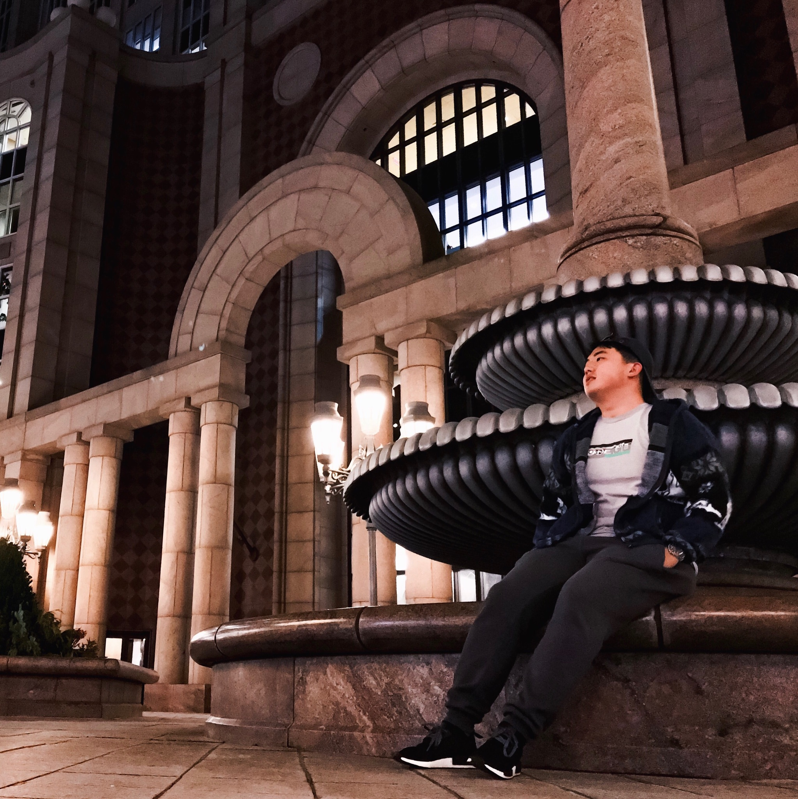
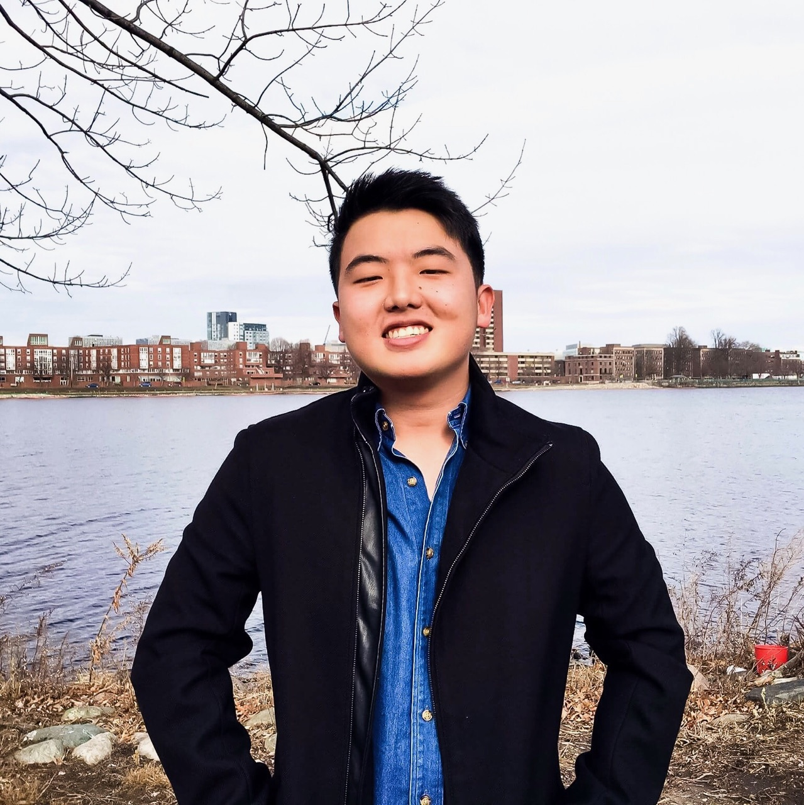

I was born in Seoul, South Korea. My parents believed in the American Dream so we moved to the States when I was 3 years old. I grew up in Chicago, IL until my last year of elementary school, which I then moved to Duluth, GA until I graduated highschool. I am currently majoring in Computer Science at Boston University.

Interests
I am interested in photography in which I currently use my iPhone 7 to capture anything with potential. Good photos don't come from the camera, they come from the person. To extend my enthusiasm for photography even more, I have recently started to utilize Adobe Photoshop CS6 to create illusions or manipulate photos.

Goals
My personal goal is to shape my calves to be as beautiful as the pictures I take, and in the future, I hope to have traveled the world. I always aspire to be my own individual without conforming to the norms that society has placed, and one day, I will impeach Susan's position as KSA President and claim it as my own.